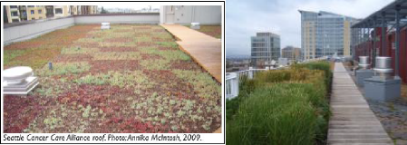
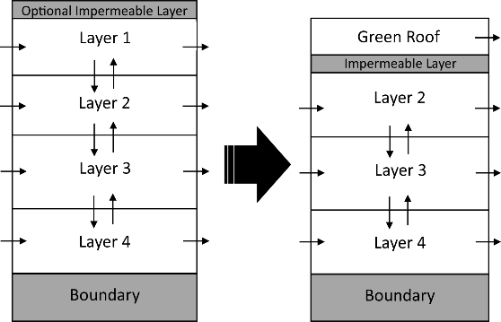
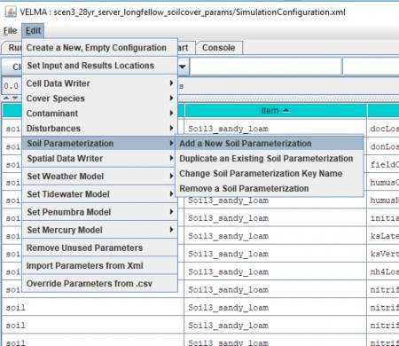
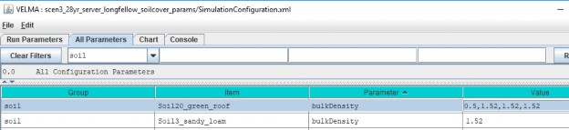
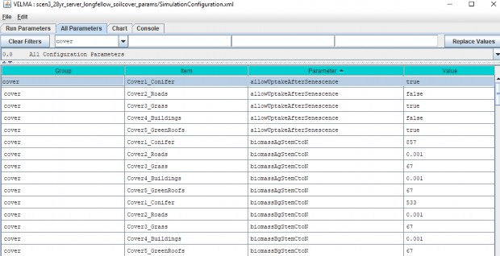
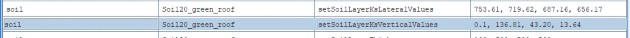
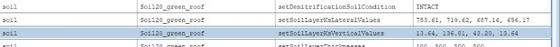

+
E.4 | Implementing Green Roof Applications in VELMA
Overview (Tutorial E.4 - Implementing Green Roof Applications)
Various green infrastructure (GI) can be included in VELMA watershed setups. This document provides guidance on how to implement green roofs in VELMA. As a user, the primary considerations are to change land cover and soil specifications to match the physical elements used for green roofs.
Intensive vs. Extensive Green Roofs
There are two general categories of green roofs: intensive and extensive. Intensive green roofs have thicker soil columns (6-36") and allow much larger plant species to be maintained, while extensive green roofs have shallower soil columns (2-6") and much smaller biomass plant species. Examples are shown below:
Figure 1. Examples of extensive (left) and intensive (right) green roof implementations. Images obtained from "Green roofs in Seattle: A survey of vegetated roofs and rooftop gardens", which was prepared for the City of Seattle and the University of Washington Green Futures Lab by Annika McIntosh in August 2010 and can be located at http://www.seattle.gov/Documents/Departments/OSE/Green-Roofs-In- Seattle.pdf
VELMA Mechanism for Simulating Green Roofs
A VELMA user will need to make two sets of changes to correctly parameterize VELMA to simulate the implementation of green roofs within a watershed. These include cover type parameterizations and soil type parameterizations. The user will first need to create new cover and soil types that correspond to the locations of green roofs within their watersheds. This is accomplished in the same manner as adding any new cover or soil type, as discussed in other portions of the VELMA manual. Note that if extensive AND intensive green roofs are included in the same model simulation, then they need to have corresponding cover and soil types for each type.
Below is a sketch depicting the general use of green roofs in VELMA.
Figure 2. Graphical depiction of simulating green roofs in VELMA. The arrows represent the flow of water and nutrients between adjacent cells.
Note that the first layer is used to describe the media used in the green roof. In the soil parameter section below, we will outline some example parameter specifications for how to implement different soil media types for the first layer of a cell. Also, note that the an impermeable layer must be simulated using parameter choices in order to reduce or eliminate all flow from the green roof to the belowground layers 2-4. This will be specifically described in a following section.
The next two sections will describe how the soil and cover parameters can be altered to implement green roofs on a given cell (or multiple cells). Then, we will specifically describe how to change parameterizations to reduce or eliminate flow from the first layer to the other layers (2-4).
Soil Type Specifications
The table below shows example soil type specifications for intensive and extensive green roofs.
These data were obtained from Roof-Lite Media Data sheets (Skyland USA, LLC). These media characteristics have been approved for use as green roof media in Seattle, Washington to be eligible for stormwater credits. Note that you will want to verify these soil parameters and characteristics for your particular watershed before implementing these values.
| Properties | General (Sandy Loam) | Extensive Roofs (Top Layer) | Intensive Roofs (Top Layer) |
|---|---|---|---|
| Porosity (v/v) | 0.453 | 0.70 | 0.7 |
| Field Capacity (v/v) | 0.207 | 0.60 | 0.65 |
| Wilt Point (v/v) | 0.095 | 0.12 | 0.12 |
| Hydraulic Conductivity (mm/day) | 770 | 87,000 | 10,000 |
| Bulk Density (g/cm3) | 1.52 | 0.50 | 0.75 |
| Depth (mm) | 500 | 100 | 500 |
To specify these parameters in VELMA, create a new soil parameterization for Green Roofs.
Then, set the parameters for the Green Roof soil to only apply to the 1st soil layer, as shown below.
In the above screenshot, we have two soil layers (Soil20_green_roof and Soil3_sandy_loam). Note however, that the change in the bulkDensity parameter for the Green Roof soil type only pertains to the first soil layer. This can be done for the remaining soil parameters, e.g., porosity, field capacity, depth.
For a list of all relevant soil parameters that are parameterized to use Green Roofs, please see the VELMA .xml file of the Longfellow watershed in Seattle, Washington, which is provided as an example.
Cover Type Specifications
Extensive green roofs can support low-level biomass growth, while intensive green roofs can support much higher biomass values. We used Sedum album data from Getter et al. (2009), which provided average estimates of 240 and 1000 gCm2yr-1 for extensive and intensive green roofs, respectively.
There a large number of parameters that need to be properly parameterized to match the growth of aboveground and belowground biomass for a particular cell. Below is an example showing fiver cover types, including Conifer, Roads, Grass, Buildings, and Green Roofs. In some cases - for example, with extensive green roofs - you will want to match your parameterizations of the "Grass" cover type with the green roof cover. In other cases, you may want to use blends of parameterizations to represent species mixtures.
For a list of all relevant cover parameters that are parameterized to use Green Roofs, please see the VELMA .xml file of the Longfellow watershed in Seattle, Washington, which is provided as an example.
Limiting Flow from the 1st Layer to the Underground Layers
The final step to implementing green roofs in VELMA requires the user to reduce the amount of flow from the first layer to the second through fourth layers to a near-zero value. Note that the first layer represents the media contained in the green roof, and the other layers represent the soil material
underneath the buildings; that is why we wish to remove the vertical flow from the first to the other layers.
The mechanism to perform this operation is the following VELMA parameter:
/soil/<GreenRoofSoilName>/setSoilLayerKsVerticalValues.
As shown in the following screenshot, the first of four values should be reduced to a near-zero value. Note that using 0 (or even 0.1) will oftentimes cause the model to crash, so the user will need to test different possibilities to find a solution that will not crash the model yet simulate the desired mechanism.
An example of a parameterization that resulted in a crashed model run.
An example of a parameterization that resulted in a successful model run.
Ultimately, the user will need to validate the use of particular ksVert and ksLat values by comparing simulated with observed data.
Conclusions
This document has outlined some basic ways to incorporate green roofs within VELMA. Much testing and validation is needed to verify that this mechanistic approach is suitable for simulating green roofs in particular watersheds. We emphasize the need to validate VELMA with observed data - not only at a single gauge at the watershed's outlet but also with other site-specific or average observed data (e.g., soil moisture, evapotranspiration) that can be used to further constrain the model for particular green roof implementations.
References
Getter, K.L., Rowe, D.B., Robertson, G.P., Cregg, B.M. and Andresen, J.A., 2009. Carbon sequestration potential of extensive green roofs. Environmental science & technology, 43(19), pp.7564-7570.
Skyland USA, LLC, Data sheets for parameterization information for different types of green roofs. https://www.rooflitesoil.com/downloads/